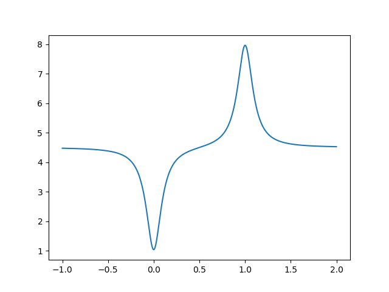
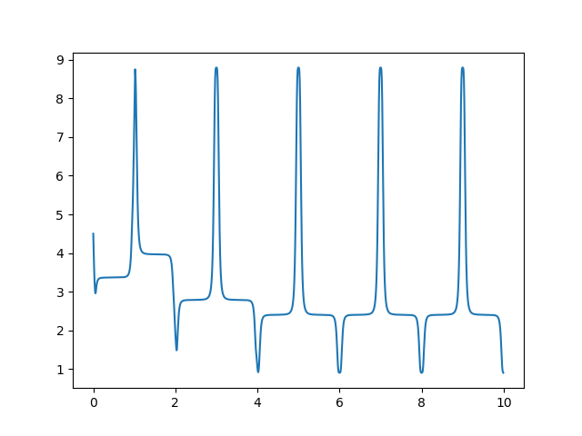
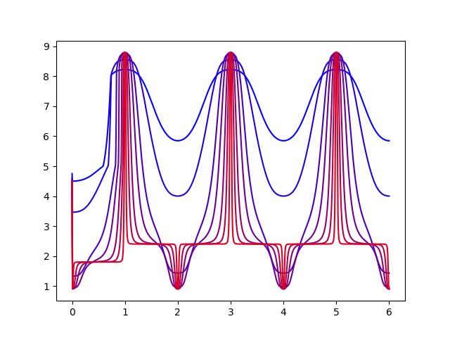

|
Posted on October 25, 2019
by Taran Lynn
In control theory we manipulate the control according to a control law to match the response to a setpoint value. However, what if the parameters for the control law require that we know the minimum and maximum values the response can achieve, and what if this is not known a priori? If it is not dangerous to set the response to its minimum and maximum values, then one solution is to probe the response. However, one issue I faced when I was recently developing a control law was that it did not handle discontinuous changes in the setpoint well. Since I still needed the minimum and maximum response values, the most obvious solution was to develop a continuous probing function. This function would have to be cyclic, spend most of its time at the target value \(r_{target}\), and occasionally probe for the minimum \(r_{min}\) and maximum \(r_{max}\) response values. The first step is to develop a function that peaks at these values. Such a function is \[f(x) = r_{target} + \frac{(1 + b) r_{max} - r_{target}}{(a (1 - x))^2 + 1} + \frac{(1 - c) r_{min} - r_{target}}{(a x)^2 + 1}\] \(a\) controls how sharp the probes are, and \(b\) and \(c\) controls how far we probe past the known minimum and maximum values. Note that if \(b = 0\) or \(c = 0\) then the minimum or maximum estimations will never change. This function looks like  Now we want to add a periodic component to this function to allow it to continually reestimate the minimum and maximum responses. To do this we can apply a sinusoidal function first, and then pass this to the previous function. The resultant function is \[g(x) = f \left( \frac{\sin(\pi x - \pi/2) + 1}{2} \right)\] An example of the resulting function’s operation with continuous estimation of min/max responses is shown in the following graph.  The following is a graph showing how the function behaves as \(a\) is increased. Blue indicates low \(a\) values and red indicates high \(a\) values.  As we can see, the larger \(a\) is the more time we spend on our target response, and the less time we spend probing. This is good because we want to spend most of our time at the target response. However, if the probe is to steep and does not last long enough, then the control law will not be able to reach the min/max response, thus defeating our goal of developing such a function in the first place. Thus, the value of \(a\) must be chosen wisely, and depends heavily on the control law used. \(b\) and \(c\) also depend heavily on the control law. In general they should be set to make \(r_{max}\) and \(r_{min}\) as close to the values they’re expected to have, which can be gleamed by studying the model of the system. |